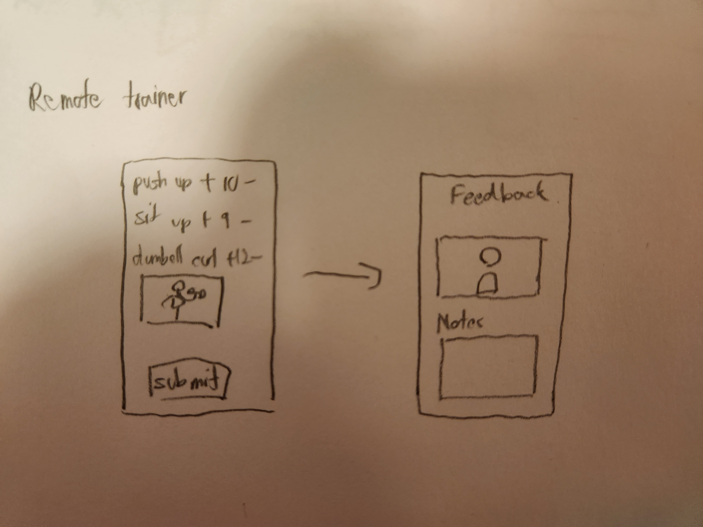
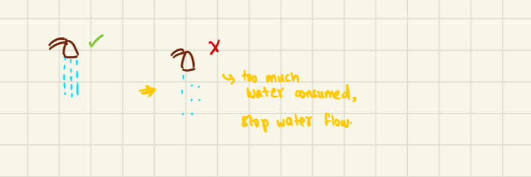
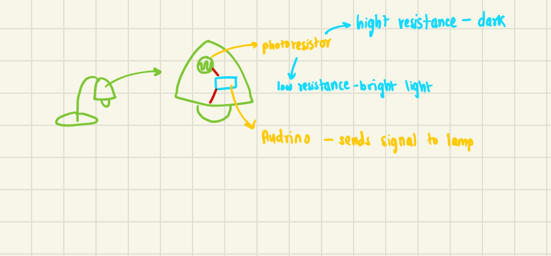
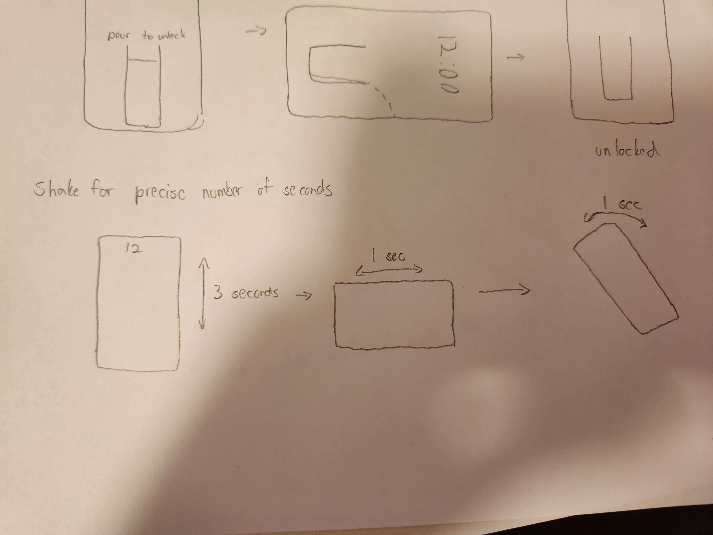

I am a computer science major and philoshopy minor in my final year at the University of Calgary. This site will highlight some of my projects.
The Board ↓
The Board is a project aimed at enhancing communication for social settings. The basic premise is that each user has a live personal board. On their board they are able to customize widgets, themes, and who has access to it.
Anyone with access to their friends board can then write on it at any time, and the live drawing will appear for everyone who has access to it. This allows user's to write messages on their own boards as
broadcast messages, for example, "Going to study at the library at 11am today. Anyone is welcome to join!", or friends can write on a users board to talk directly to their friends, as is shown in the demo video below.
Although this project is just a prototype, the complete version would have large projections on the wall where users can draw directly with their hands, or access it through their computer or phone.
Sketching and Ideation Phase
Developing the idea for The Board came from the prompt to "Enhance Communication". We then used the 10+10 sketching method to generate the following sketches before deciding to implement The Board.
Concept Sketches
Virtual big screen experience in virtual reality for you and your friends. This makes remote movie-watching sessions with your friends more personal because it is like they are watching the movie right next to you.
This sketch is for a remote team-building exercise idea. Escape rooms are an ideal team-building exercise because they require problem-solving and collaboration. They are also fun and a great way to build relationships with people. We came up with the idea of a VR escape room as a team-building exercise for remote teams.
An open mic that allows people to join both in person or from any device (phone/computer/VR headset). Cameras are placed around the room and stage for remote audiences and there is a projector on the stage for remote performers.
A sketch for a collaborative project management app. This app contains a task board to help keep track of your team’s tasks, a file-sharing app for files and links, and text and voice communication.

A sketch for an app to help you find a personal trainer online. Then, you can send your workouts or videos of your workouts to your trainer to receive feedback.
A sketch for AI POWERED AR translation glasses. The glasses come equipped with a microphone to help record a conversation in another language, translate it using AI, and provide real-time subtitles in augmented reality.
A sketch for a set of whiteboards that are synchronized. Writing anything on one of the boards also appears on all of the other boards. This is the inital sketch for our final prototype.
Detail Sketches
A sketch for a collaborative project management app. This app contains a task board to help keep track of your team’s tasks, a file-sharing app for files and links, and text and voice communication. We chose not to go forward with this idea because this is not a very novel idea and there are plenty of apps that do the same thing.
A sketch for an app to help you find a personal trainer online from anywhere in the world. Then, you can send your workouts or videos of your workouts to your trainer to receive feedback. Feedback can come in the form of a video or text. There are also options available to chat or call your trainer when you need them.
A sketch for a set of whiteboards that are synchronized. Writing anything on one of the boards also appears on all of the other boards. The boards can be used for remote brainstorming, keeping track of tasks, or just general communication. We decided to go forward with this idea because of its versatility and it was not too challenging to prototype.
An open mic that allows people to join both in person or from any device (phone/computer/VR headset). Cameras are placed around the room and stage for remote audiences and there is a projector on the stage for remote performers. There are also screens placed around that display messages from audience members. Remote audience members can send messages from anywhere and in-person audience members can post messages using their mobile devices. We decided not to go forward with this idea because the scale was too big.
Rotoscope
To help visualize The Board, we created the following rotoscope. It displays multiple users writing on the same board, communicating with each other.
Concept Video
Our concept video was created to show the use-case of The Board and further understand how our prototype will look.
Implementation
The implementation for this project was done with basic html and javascript. With different boards for users that can be drawn on each board by other users, our prototype was able to showcase our vision of The Board.
For this project, we were prompted to “solve an everyday problem” using the basic Arduino kit hardware. After numerous ideas and sketches, our group decided on the posture corrector. The problem our device solves is bad posture over time when working at a desk.
By mounting an ultrasonic sensor to the headrest of a chair, the Arduino software will constantly scan for a distance threshold. When the user has a bad posture, their head and back will be slouched forward, exceeding the
distance threshold and triggering the buzzer and alarm, causing the user to maintain good posture. Our final prototype used cardboard to cover the wire and circuitry and make the device look like a usable appliance.
Below is our concept video showcaseing the final prototype.
Sketching and Ideation Phase
Before deciding on our idea of the posture corrector, collectively and individually we went through the concept sketches and detailed sketches phases of design
Concept Sketches
The automatic fan was created by Logan as a way to automatically trigger a fan based on a temperature and humidity sensor. When a certain threshold temperature was reached, the fan would trigger. This idea would be used on an office desk, or with bigger hardware in a room. We decided not to pursue this idea due to its simplicity.
The closet organiser is an idea by Logan that helps to keep a cluttered closet organised. By replacing the hanging rack with a rotating rack powered by a motor, the user would hold a button to rotate their clothes until the one they want is found. While this idea was interesting, due to hardware constraints, we decided not to pursue it.
The pet feeder is an idea created by Logan that solves the problem of forgetting to feed your pet. Using an internal timer in the arduino software, at a set interval, for example 6am and 6pm, a motor would activate and let the food bowl be filled from a reservoir. In the end we decided not to pursue this idea due to similar products already existing.
The pet toy was drawn by Logan and serves as a way for cats, dogs and other small pets to entertain themselves. The basic idea is that the toy will be able to move itself away from the pet using an ultrasonic sensor and motors. Furthermore, the toy would have some sort of decoration on it that pets would want to play with. We decided not to further explore this idea because similar products already exist.
A system using Arduino, humidity, and temperature sensors to water plants automatically when the soil is dry, preventing forgetfulness.
A hands-free garbage can with an ultrasonic sensor and servo motor to automatically open the lid when someone approaches, promoting hygiene.
A chair-mounted sensor connected to an Arduino that alerts the user to correct their posture when slouching. This is the initial design of the final prototype we decided to implement.
An art installation that responds to people's presence using ultrasonic sensors, servo motors, and LED lights, creating an engaging and dynamic visual experience.
A device using a photoresistor and Arduino to automatically turn on LEDs in the dark.
A Lego-built robotic arm controlled by an Arduino and servo motors for basic tasks.

An Arduino-based system that tracks water usage in showers and alerts when it's excessive.
A setup using ultrasonic sensors and an Arduino to monitor and signal when pantry items are low.
An alarm clock that mimics a gentle sunrise by gradually increasing the brightness and color temperature of LED lights, providing a more pleasant wake-up experience.
From these concept sketches, we chose the most promising and drew further detailed sketches.
Detailed Sketches
The sunrise simulator alarm clock solves the problem of unpleasant alarms and it helps you start the day with a positive mood. Set the alarm to the time of your liking or set it to match the sunrise outside, which is detected by the photoresistor. The alarm wakes you up by simulating natural sunlight with the LED strip and producing natural sounds (like birds chirping, wind chimes) to wake you up.
This automatic fan and cooling system is meant to help get through those hot summer days. The fan begins to spin when the temperature sensor has detected that the temperature is too high. The user can also press the button to spray themselves with a refreshing splash of water.
This smart garbage can aims to improve hygiene when using a garbage can by removing any physical touch necessary. First, walk up to the garbage machine to be detected by the first ultrasonic sensor and, wave ur hand above the can to trigger the second ultrasonic sensor. Then, the servo motor opens the lid for you.
An ultrasonic sensor on a chair's back measures the distance to the user's back. The Arduino triggers a buzzer or motor when it detects slouching, promoting good posture. Users can set their preferred distance thresholds for posture alerts.
This version of the posture corrector works in the same way as the ones above but provides feedback differently. The chair box in the back that contains a buzzer and a vibration motor, as well as the arduino. When the user has a bad posture, the buzzer makes a sound and the vibration motor vibrates the entire chairs.
This version of the posture corrector was drawn by Kai. The key difference here is that the feedback is situated on top of the users computer monitor to emit visual and auditory feedback.
This version of the posture corrector was sketched by Logan. These two versions show the same basic idea of creating an output when bad posture is detected. In the first version, a buzzer is activated on the seat and in the second version, a fan is activated on the user's desk. We decided to implement this idea using a vibration on the seat and an audio output.

The photoresistor detects ambient light levels, varying its resistance accordingly. The Arduino reads the photoresistor's resistance, turning on LEDs when it detects darkness. This setup automates lighting, ideal for use in places like bedrooms and hallways.
Arduino controls servo motors, each assigned to a part of the arm for movement. The arm, built with Lego blocks, is lightweight and customizable. It can perform tasks like picking up objects, suitable for educational or hobbyist purposes.
A water flow sensor (or ultrasonic sensor) measures water use during showers. The Arduino processes this data,
displaying it and alerting users when usage is high. This system helps in conserving water and monitoring usage in real-time.
Concept Video
Before attempting to implement a useable prototype, our team created a concept video to further understand the useability of the product.
Implementation
With an understanding of what our project will look like, we began our implementation by using an arduino circuit simulation. Below is a picture of the circuit we created and the actual implementation using the Arduino kit.
With our hardware and software in place, we completed the prototype and hid the wires using cardboard to make it integrate seamlessly with a chair. The final prototype is shown at the top of this write-up.
The source code for the arduino can be found here.
Phone Unlocks ↓
In this project we were challenged with coming up with a new way and creative way to unlock a mobile phone.
Our team came up with a touch based solution, the guitar unlock, and a sensory based solution, the falling bird unlock.
Multi-touch Guitar unlock
For our innovative multi-touch unlocking system, we embarked on a journey of ideation, exploring a multitude of intriguing concepts. Among these, "Cosmic Alignment" emerged, envisioning users interacting with celestial entities akin to planets for phone access. Another concept, "Composition Unlock,"
entailed crafting a unique musical composition that, when performed correctly, would grant device entry. Lastly, the "Zodiac Unlock" required users to input a constellation sign corresponding to their chosen symbol for unlocking.
After extensive deliberation and the creation of initial sketches for each idea, it became apparent that the Composition Unlock not only stood as a unique approach but also promised an engaging user experience. As we transitioned from concept to implementation, our focus shifted towards refining the user interface, departing from the conventional guitar-like design to elevate the overall interaction.
Upon a sagacious suggestion from our professor, we integrated a musical element, enriching user interaction with harmonious notes upon key activation. While Heer led the charge in design and conceptualization, Kai took the helm in crafting the user interface and ensuring seamless functionality on both the front-end and back-end using HTML, CSS, and Javascript. Simultaneously, Logan integrated the musical effects into the website, guaranteeing flawless operation of the entire system.
Sensory-based bird fall
Logan pioneered the sensory-based unlocking method, introducing innovative concepts such as the shake pattern, where users move the phone in a specific pattern to interact with the screen and unlock the device. Another inventive idea involved using vocal cues,
where users could hum a tune, and the device would unlock once the correct melody was sung. As the implementation evolved, remarkable concepts emerged, including the angle unlock, which required physically manipulating the phone to reach a specific angle for unlocking. Another concept was the ladder, where a ball navigated between rungs, ultimately landing on the correct one to unlock the device. Ted endorsed this implementation, recognizing its potential.
Throughout the iterations, notable improvements were made, notably refining the locking mechanism to incorporate a tile-based approach rather than simply reaching the end, enhancing overall security. Additionally, meticulous attention was paid to the user interface. Ted authored the Unity script for the unlock screen, augmenting it with various illustrations to enhance the website's visual appeal.
Multi Touch Unlock Ideation
This multi-touch unlock system necessitates users to blend their chosen unlock color, and if the resultant mixture aligns with the preset color, the phone will unlock. While this design for multi-touch demonstrates a clever concept, it garnered only two out of four votes in favor during the proposal phase. The majority of members expressed reservations about its viability as a final choice, citing potential difficulty for users to consistently reproduce the exact color and a belief that other ideas might offer greater creativity.
For this multi-touch unlocking system, users would need to align all the planets in the correct sequence for the phone to unlock. This concept initially appeared quite innovative, promising an engaging user experience. However, it faced a couple of significant drawbacks. Firstly, representing the entire solar system on a mobile screen posed a challenge. If only a few parts of the system were visible at a time, it would diminish the overall user experience. Additionally, creating a visually appealing and enjoyable interface presented another difficulty. In the proposal stage, only three out of the four members supported this idea.
The multi-touch unlock system employs an emoji pattern, allowing users to select and input a specific sequence of emojis to access their phone. The user sets their own unique pattern. Initially, this design received a score of 0 out of 4 in the design proposal phase due to its perceived simplicity.
This multi-touch unlocking system enables users to input the correct combination, and once it's successfully entered, the phone unlocks. Originally, these concepts, as depicted in the diagrams, were envisioned to be executed using a keyboard, guitar, or drums. The majority of members were highly enthusiastic about this concept, as it not only presented a unique approach but also offered numerous opportunities for enhancements and additional features to make the lock more enticing.
The multi-touch unlocking system utilized puzzle pieces, requiring them to be arranged in a specific sequence for the phone to unlock. This sequence could involve solving a jigsaw puzzle or organizing numbers in the correct order by sliding them one at a time. Unfortunately, only one out of four team members endorsed this concept. One of the drawbacks of this unlocking method was its resemblance to the familiar 'slide to unlock' approach.
This multi-touch unlocking system draws inspiration from constellations. Users have the option to select their preferred constellation pattern to unlock the phone. To gain access, they arrange the stars of the chosen constellation. Three out of four team members endorsed this design for further development, finding it an intriguing addition. However, it was noted that one drawback was its similarity to the Android unlock method. Additionally, accommodating the extensive variety of constellations could pose a challenge.
The multi-touch unlocking method, utilizing the three-door unlock approach, mirrors the Monte Carlo principle where users select a door at random to locate the goat. However, in the event they fail to identify the correct door, the game resets. While this concept holds potential, the practical execution may not yield optimal results. Moreover, relying on guesswork to find the correct door undermines the primary objective of enabling users to access their phones conveniently using their chosen unlocking method.
This method involves brewing a potion to unlock the phone, using a multi-touch approach. Users are given a set of basic potions and must brew the one they select as their unlocking elixir. While this concept has potential, it falls short in terms of uniqueness and simplicity. Additionally, implementing it would necessitate a significant emphasis on UI design to make up for the lack of distinctive features.
Sensory Based Unlock Ideation
The sensory unlocking system operates by requiring specific motions with the phone to enable unlocking when the moving object reaches a designated endpoint. The majority of our group members supported this model for sensory unlocking, as it offers an innovative approach and ample room for generating creative ideas, such as golf-based or ladder-based unlocking, as envisaged in future implementations.
This sensory-based unlocking method requires users to hum or sing a specific tune to gain access to their devices. The tune is then recorded by the sensory device and analyzed for a match with the tune already registered in the system. This concept garnered a 75% approval rate from a sample of four individuals. However, one potential drawback to implementing this method is its perceived complexity.
In this sensory-based unlocking method, users are required to engage in physical activity, prompting the device's meter to measure their speed. When the device registers a specific speed threshold, it triggers the phone to unlock. While one out of four team members advocated for this approach, it was ultimately not selected, partly due to its limited suitability for testing purposes.
This method of sensory-based unlocking utilizes the hand's temperature to grant access to the phone. When the temperature gauge approaches the predetermined unlocking threshold, the device is activated. However, only one in four individuals supports this concept. One drawback raised is the potential difficulty in accessing a device to measure its temperature.
This method employs a sensory approach to unlocking the phone, wherein the user spins the device on their finger, akin to spinning a basketball. While this concept garnered a 75% approval rate, it's worth noting that despite its popularity, it may not be the most practical solution. Not every user possesses the dexterity to execute such a maneuver, potentially leading to accidents.
From the initial sketches, the best were chosen and further refined using the 10+10 method.
Multi Touch Idea Refinement
For this implementation of the zodiac symbol multi-touch unlocking method, we observe various screens. In this design, users are required to scroll across the expansive constellation and locate the precise constellation to unlock. However, one drawback of this approach is its potential size, which may make it less accessible compared to other, more innovative and adaptable ideas.
Another approach to unlocking this multi-touch composition involves a piano key setup. Users can play the designated chords on the keyboard to activate the unlocking sequence. This concept closely resembled the guitar unlocking method. Ultimately, our team opted for the guitar method because it resonated more with us in terms of interest and engagement.
Logan's proposed multi-touch composition method, which would have allowed users to play drums and a band to unlock the phone upon successful execution, was ultimately not selected due to its complexity in implementation.
This method of sensory-based unlocking utilizes the hand's temperature to grant access to the phone. When the temperature gauge approaches the predetermined unlocking threshold, the device is activated. However, only one in four individuals supports this concept. One drawback raised is the potential difficulty in accessing a device to measure its temperature.
Logan's guitar composition employing a multi-touch method allows users to select keys and strum them to produce sound. This method holds great appeal, as it not only offers an enjoyable experience but also provides room for enhancements, including adding sound to the corresponding chords.
Multi Touch Idea Refinement
This approach employs sensory techniques such as singing and humming to unlock the device. In the depicted scenario, Kai illustrates users attempting to reproduce a specific tune set as their password. If the gathered rendition is incorrect, users receive a notification about its inaccuracy. Additionally, users have the option to specify how much of the tune they wish to record.
Some of the more detailed illustrations demonstrate the capability to record notes. They go even further by displaying voice frequency alongside visual representations of the musical notes. In contrast, certain depictions showcase a fixed set of notes, requiring them to be sung to access specific ones. Another option explored involved using a keyboard or a musical instrument to indicate the notes. Despite the extensive scope of possibilities, this approach was ultimately not chosen. We were particularly focused on developing the guitar unlocking method for the multi-touch system, and it may have been too complex to pursue given our limited experience with sensory applications.
Ted developed a sensory-based phone unlocking method that relies on specific motion patterns. By moving the phone diagonally or up and down, it can be unlocked. While this approach appeared enjoyable, it didn't garner much interest for further exploration, as it seemed rather straightforward and lacked uniqueness.
Ted developed a motion-based sensory unlocking method. In this approach, users must set the angle on their device to one that closely matches the intended unlocking angle. Once this angle is reached, the phone unlocks. While this method appears effective, it also brings to mind a similar technique used in a prior project by another group, where they employed a rotating lock for phone access.
The innovative sensory motion technique devised by Ted involves gently tilting the phone from side to side, facilitating the movement of the ball from one rung to another. Eventually, it aligns perfectly with the correct rung, enabling the phone to be unlocked and accessed. This approach not only demonstrated uniqueness but also added an element of enjoyment to the process. Ultimately, our team decided that this implementation was the most effective choice.
This implementation, conceived by Ted, involves a sensory response to the motion of water descending when the phone is tilted. The act of water cascading down serves as the mechanism for unlocking the phone. While this approach initially appears intriguing, it also raises concerns. It seems straightforward and potentially lacks the robust security needed for unlocking sensitive devices.

Ted also devised this sensory approach to unlock the phone. In this method, if the device is held at a specific angle for a designated duration in a particular pattern, the phone would unlock. While this unlocking mechanism proved effective, it appeared somewhat simplistic and lacked the distinctive and enjoyable elements present in some of our other methods.
Heer devised this sensory-based approach for the shake pattern. The concept involved using a golf ball set in motion, ultimately reaching the goal and landing in the golf hole. While the idea was innovative and entertaining, its practical implementation posed significant challenges, making it less feasible for seamless execution.
In this rendition of the shake pattern by Heer, the objective is to relocate the object to the appropriate box. While the execution was well done, it bore a resemblance to another concept and lacked a distinct uniqueness.
From these refined sketches, the final prototypes for the guitar screen lock and bird fall lock were implemented, as shown in the videos above.
The development process for the engaging clicker button game involved evaluating and selecting the top 10 ideas out of 40.
The "Monkey Poop War" concept, though unique, was considered too complex. The "Clicker Game" stood out for its simplicity and creative potential.
Other ideas included bird-viewing, color combinations, and expression-changing applications.
The top contenders were "Monkey Poop War," "Clicker Game," "Bird Sounds," "Color Changing Game," and "Expression Changing."
Sketches for the color mixing game showed creativity but faced limitations.
The monkey poop game offered complexity but was ultimately set aside due to logistical challenges.
The bird-viewing application needed further depth.
The process highlighted the need for an idea balancing uniqueness and feasibility.
The clicker game emerged as a promising choice, with Thet's implementation adding innovative elements like a metronome and various game modes to improve hand-eye coordination and reflexes.
The resulting clicker game is designed to enhance hand-eye coordination and reflex responses in a fun and interactive manner. It offers diverse modes including 'Normal Mode' for classic clicking,
'Color Mode' for visual stimulation, and 'Animal Mode' for both entertainment and education. With these options, players can tailor their experience, ensuring hours of entertainment and skill-building.
Ideation Ranking
We created a tier list of our top 40 ideas so that it is easy to rate them, our tier list ranged from (S) to (D), where (S) represents the top of the tier list and (D) represents the bottom-most tier.
This made the sorting easier, making us consider only the top 10 ideas. Following are those top 10 ideas.
Concept Sketches
Monkey poop war was a part of our top 1 ideas, this is a game where there are two monkeys facing each other and they throw poop at each,
which consequently has to be dodged by the opposite monkey. It was made by Logan, we chose this as the best idea because not only is it unique but also it is fun and educational.
It is good for the development of hand-eye coordination. This idea was eventually not chosen to go further because it seemed a bit too complicated and maybe not as unique.
The second idea, or the first on (A) tier is a clicker game. This idea was made by Htet, some of the great features of this application are that it is quite unique and it teaches kids to work fast.
This application was also one of our priorities because it has a lot of room for more creativity since it is a very simple and basic application. The downside of this application for this project could be that it is not as interesting as some of our other ideas.
This idea also belongs to the (A) tier, this idea belonged to Heer. In this application, the user can view birds of different species from all around the world and see what they sound like.
They can also view fun facts and important information about the birds. Some of the pros of this application were that it was something new, and a lot more educational than some of our other ideas. But the idea itself was a bit limiting and there was not much room for creativity.
This idea was also a part of the (A) tier, and it was Logan’s idea. This application is a game where the participants can learn how to create different color combinations using the primary color. This might not seem that unique at first glance but it is pretty creative.
It is also a fun way for the participants to learn about new colors and their usage.
This idea was a part of the tier list (A), it was made by Logan. In this application, participants can pull down the level where a curtain can be pulled in front of the face on the screen whereby the expression changes,
it could be useful to teach young kids about different emotions and expressions. It was a unique and interesting idea but there seemed to be little room for development and creativity.
This application idea was introduced by Thet, and it is a part of the (A) tier list. Using this application users can adopt a pet, and they can they can take care of their pets. This not only teaches the participants how to take care of someone but it is also really fun and interesting.
Although there is a lot of room for creativity, it can be argued that it is not as unique.
This application idea was created by Thet, it is a story visualization and is a part of our tier (A). In this idea, the participants can read and see stories happening along with picking their own storyline. They can be a part of changing the flow of how the plot goes.
This can be a really good application as it teaches the participants how stories can be created, which can help them be more creative. Although this seemed like a good idea, it might not have been the most unique and creative.
This was a typing game and it was created by Thet, this is a part of our tier group (A). In this game, the users can learn how to type, while a timer is going on. It is quite educational but it doesn’t seem to show any form of creativity and uniqueness.
Therefore we had to rule it out from our future portfolio.
This outfit game was a part of Thet’s ideas, It is a part of the (A) tier list. This application was an outfit game where users could put outfits on and match them, organise them. Although this seems to be pretty fun it is not unique.
It would have been a fun application to work on but there are many other platforms offering such games.
After making this tier list, we were left with 10 ideas to consider, although all these 10 ideas were worth considering monkey poop war, clicker game, bird sounds, color changing game, and expression changing,
were some of our top ideas to consider from. Other than these 10 ideas there were many influential and great ideas that could have been considered, but we unfortunately had to stop working on them due to the time constraints.
Detailed Sketches
These sketches belong to the color mixing game, these sketches were created by Kai. This shows the flow of how the users can pick the secondary-complementary, primary-tertiary colors and can see how they mix
to become one of the colors in the color wheel. One of the pros of this implementation was that it was clear and condensed, it made learning colors fun and interesting but this implementation also helps us highlight that this application can be a bit limiting in terms of creativity.
This set of implementations for the color mixing game were created by Logan. Logans attempts to come up with a lot of different ways to portray the idea, it almost makes the process itself pretty fun and interesting.
Although he was able to come up with many different scenarios to mix and add colors we had to eventually rule it out because it was limiting.'
These sketches for the monkey poop game were created by Htet, there are many different progressions introduced by Htet for the scenarios of the game. All of them can be explored as you scroll through the next slides. These implementations reveal how this game
can either be played with a user on a touch screen device or through a computer or a machine. It also reveals how the game seems to get more complex, which shows that it has a lot of room for creativity. Different lanes are added to make the game more interesting and hard to play,
and the players can also participate in standoffs! Eventually, it was decided to not pursue this idea as it revealed a lot of loopholes that would have been hard to carry on with within 1 week of conception.'
This is one of our final ideas, the implementation was created by Heer. As depicted, it shows how the user can learn about different birds, and they also had access to a view of a world map and different badges and rewards to add to their profile.
The implementation seemed to be pretty easy to implement but it seemed like it lacked depth to be considered in the future; there were a lot of elements which were limiting and hindered our future creativity.'
From all of this implementation, it was revealed that some ideas like the color theory game, and bird sounds application were simple and easy to pursue but they lacked creativity while on the other hand games like the monkey poop game were fun and unique but a bit
intimidating to approach. Overall it felt like there was a need for an idea that provided us a middle ground for uniqueness and approachability.
Final Idea Sketches - Clicker Game
This was the implementation idea created by Kai for the clicker game, this implementation helped us reveal that even though the clicker game was simple and ingenious it has a lot of room for creativity. It was fun to see how a lot of
different elements like animals, hazards, and colors can be introduced to not only make the game more creative but also help the users learn a lot of new things in the process.
This implementation for the clicker game was created by Htet, Htet introduced ideas like the metronome, fish clicker, mole game, and mole buttons which made the game more interesting than it seemed at first glance.
This implementation helped us set the game apart from the rest of the top-chosen applications. It is also further shown how the clicker can be made smaller to make it more challenging, it addresses the theme of hand-eye coordination and making the participants better at their reflexes.
Source Code
This source code represents a webpage for "The Clicker" game. The Clicker utilizes HTML, CSS, and JavaScript, along with Tailwind CSS for styling and functionality.
Databases Course Term Project ↓
Full stack development of a 3-tier architecure web application.
Tool for admitting and diagnosing patients remotely. I was in charge of the clerk functionality, shown below.
Technologies
Front-End:Vue.js, TailwindCSS
Application & API:Python Flask-Restful
Database:SQLite3
"""Sample Query using list comprehensions to build json with nested lists"""
# Get Patients and keys of all their forms. Null if no report of that kind exists
cursor.execute(
"SELECT p.P_SSN, n.Fname, n.Lname, n.Is_approved, m.TPAL_total \
FROM Patient as p \
LEFT JOIN New_Applicant_Form as n ON p.P_SSN=n.P_SSN \
LEFT JOIN Medical_History as m ON p.P_SSN=m.P_SSN \
ORDER BY n.Is_approved ASC ;")
forms = cursor.fetchall()
forms = [dict(f) for f in forms]
# Get all covid screens of each patient
for form in forms:
cursor.execute(
"SELECT Date FROM Covid_screen WHERE P_SSN = ?;", (form["P_SSN"],))
screens = cursor.fetchall()
form["dates"] = [f["Date"] for f in screens]
# Get all reports of each patient
for form in forms:
cursor.execute(
"SELECT Report_ID FROM Report WHERE P_SSN = ?;", (form["P_SSN"],))
reports = cursor.fetchall()
form["reports"] = [f["Report_ID"] for f in reports]